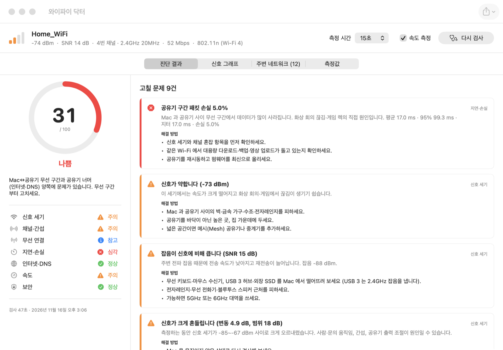
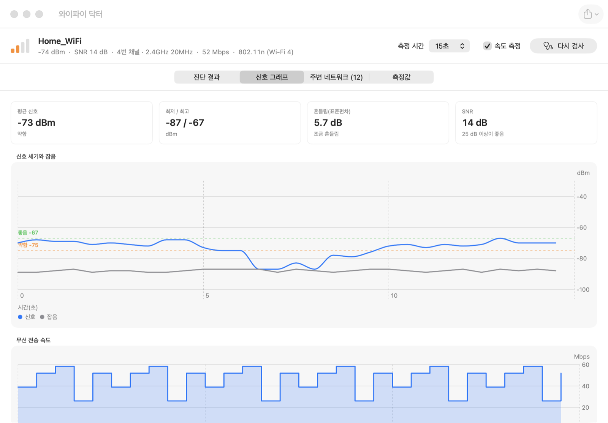
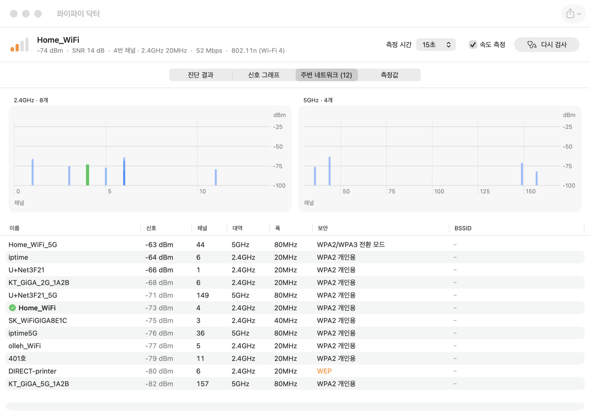

와이파이가 느릴 때,
어디가 문제인지 알려 드립니다
신호, 채널 혼잡, 공유기 지연, DNS, 인터넷 속도까지 한 번에 검사하고 원인과 해결 방법을 알려 주는 무료 Mac 앱입니다.

"와이파이가 이상해요"의 진짜 원인을 짚습니다
느린 이유는 Mac 과 공유기 사이일 수도, 공유기 너머 통신사 회선일 수도 있습니다. 와이파이 닥터는 두 구간을 따로 재서 어디부터 고치면 되는지 한 줄로 알려 줍니다.
7가지 영역을 실제로 측정합니다
추정이 아니라 Mac 의 무선 칩과 네트워크에서 직접 값을 읽고 잽니다. 기본 검사는 측정 시간 15초에 10초 남짓, 속도 측정을 켜면 20초 정도 더 걸립니다.
신호 세기
신호(RSSI)와 잡음, 신호 대 잡음비(SNR)를 0.5초마다 기록해 평균과 흔들림, 순간 끊김까지 봅니다.
채널·간섭
주변 네트워크를 검색해 채널 폭까지 반영한 겹침을 계산하고, 가장 한산한 채널을 추천합니다.
무선 연결
전송 속도, Wi-Fi 4~7 규격, 로밍 횟수, IP 주소 이상(169.254)을 확인합니다.
지연·손실
공유기까지 ping 을 보내 평균·95% 지연, 지터(흔들림), 패킷 손실을 잽니다. 화상 회의 끊김의 직접 원인입니다.
인터넷·DNS
외부 서버 연결 시간, DNS 응답, 호텔·카페의 로그인 페이지 막힘을 확인합니다. ping 을 막은 회사망에서도 잴 수 있습니다.
속도·응답성
다운로드·업로드 속도와, 누군가 큰 파일을 받을 때 반응이 얼마나 느려지는지(버퍼블로트)를 잽니다.
보안
암호 없는 네트워크, WEP·WPA(TKIP) 같은 오래된 보안 방식을 경고합니다.
문제마다 원인과 해결 방법을 함께
"신호가 약합니다"로 끝내지 않습니다. 왜 그런지, 무엇부터 해 보면 되는지를 순서대로 적어 줍니다. 100점 만점 점수와 항목별 상태로 한눈에 봅니다.
"공유기 채널을 11번으로 바꿔 보세요"처럼, 주변을 측정한 결과에 맞춘 구체적인 제안도 합니다.
신호가 언제 흔들렸는지 그래프로
측정하는 동안의 신호 세기, 잡음, 무선 전송 속도, 공유기 응답 시간을 그래프로 보여 줍니다. 순간적으로 신호가 떨어진 구간도 놓치지 않습니다.

주변 네트워크와 채널 지도
2.4GHz·5GHz·6GHz 대역별로 어느 채널에 얼마나 강한 이웃이 있는지 보여 줍니다. 내 네트워크는 초록색으로 표시됩니다.

리포트로 저장해 공유하세요
검사 결과를 A4 쪽 나눔이 된 PDF, 웹 브라우저로 여는 HTML, 텍스트용 Markdown 으로 저장할 수 있습니다. 통신사나 IT 담당자에게 그대로 보내면 됩니다.
자주 묻는 질문
위치 권한은 왜 필요한가요?
macOS 14 부터는 위치 권한이 있어야 앱이 Wi-Fi 이름(SSID)과 공유기 주소(BSSID)를 읽을 수 있습니다. 같은 이름의 5GHz 대역이 있는지, 공유기 사이를 오갔는지 판정하는 데 씁니다. 위치 자체는 읽거나 저장하지 않으며, 허용하지 않아도 나머지 검사는 모두 됩니다.
속도 측정은 데이터를 얼마나 쓰나요?
macOS 내장 networkQuality 를 최대 20초 실행하며, 회선 속도에 따라 수백 MB 를 쓸 수 있습니다. 데이터 요금이 걱정되면 상단의 "속도 측정"을 끄고 검사하세요.
회사·학교 네트워크에서도 되나요?
네. 외부 ping 을 막은 망에서는 이를 감지하고, 인터넷 지연을 TCP 연결 시간으로 대신 잽니다. 회사망에서 DNS 를 바꾸라는 안내가 나오면 먼저 IT 담당자와 상의하세요.
점수는 어떻게 매기나요?
7개 영역마다 가장 나쁜 항목만큼 감점합니다. 심각한 문제가 하나라도 있으면 50점 미만, 주의할 문제가 있으면 85점 미만이 됩니다. 90점 이상은 "아주 좋음"입니다.
터미널에서도 쓸 수 있나요?
/Applications/WiFiDoctor.app/Contents/MacOS/WiFiDoctor --cli --pdf ~/Desktop/wifi.pdf 처럼 실행하면 화면 없이 검사해 Markdown 리포트를 출력하고 PDF 로 저장합니다. --no-speed, --seconds 30, --html 파일 옵션도 있습니다.